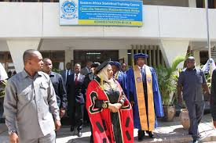

Welcome
Good luck to this year's Convocation! The chosen topic, 'The role of official statistics and big data in the economic transformations and suitable development of Tanzania,' serves as a beacon highlighting the importance of statistics and big data in guiding the economic and social development of Tanzania. Selecting this topic is a crucial step towards opening the doors for focused discussions and reflections on how official statistics and comprehensive data can be utilized as vital tools in shaping sustainable development policies and plans.
This aligns perfectly with this year's theme of the African Statistics Day, which emphasizes the modernization of data systems to accelerate the implementation of the African Continental Free Trade Area (AfCFTA) and thus propel the developmental goals of the African continent as a whole.
Recognizing how official statistics and big data can significantly impact the direction and implementation of economic and development policies, especially in this era of economic and social reforms, is fundamental.
Therefore, delving into this topic with depth and perspective is crucial to ensuring that Tanzania continues to move forward towards sustainable and deserving development.
Through this topic, we are invited to explore how official statistics and big data can assist in identifying the economic, social, and environmental opportunities and challenges facing Tanzania. Furthermore, we are encouraged to consider new and improved ways of collecting, storing, and utilizing this data to support the planning and implementation of policies aligned with our national development goals.
As Tanzania strides towards building a sustainable and suitable economy, this topic provides an excellent opportunity to conduct a comprehensive assessment of the contribution of statistics and big data in achieving these goals. In doing so, we can unlock new avenues of innovation and solutions to the challenges we face, thus contributing to positive change and sustainable development in our society.
It is my hope that the discussions surrounding this topic will be insightful, impactful, and illuminating on our path towards Tanzania's development goals. Let us work together to ensure that statistics and data become crucial pillars in our journey towards sustainable and deserving development.""

Events Available - The Grand Convocation Ceremony
Exclusive Event Details
Date: May 25th, 2024
Time: 09:00 AM - 04:00 PM
Location: Exquisite Function Hall
Address: 55769 Dar es Salaam, Tanzania
Come and witness the culmination of years of hard work and dedication!
Join us for a day filled with celebration, honor, and memories to cherish for a lifetime!
Experience the joy of achievement and the excitement of new beginnings!
Indulge in delectable refreshments and delightful entertainment!
Be part of a memorable event that marks the beginning of a new chapter!
| S/NO. | TIME | EVENT | RESPONSIBLE |
|---|---|---|---|
| 01 | 09:00-09:30 | Registration of Guests | Event Staff |
| 02 | 09:30-10:00 | Seating of Guests | Ushers |
| 03 | 10:00-10:40 | Pre-ceremony Music | Music Department |
| 04 | 10:40-11:00 | Opening of the Ceremony | Guest of Honor (ESRF) |
| 05 | 11:00-11:20 | Introduction | President of Students |
| 06 | 11:20-11:30 | Recognition of Faculty | The Dean |
| 07 | 11:30-13:30 | Student Presentations | Student Speakers |
| 08 | 13:30-14:30 | Lunch Break | All |
| 09 | 14:30-14:40 | Entertainment | Cultural Club |
| 10 | 14:40-16:00 | Continuation of Student Presentations | Student Speakers |
| 11 | 16:00 | Closing Remarks and Ceremony Conclusion | The Rector |
Main Speakers

Dr Tumaini Katunzi, The Rector

Dr Jackson Henry
.jpeg)
Dr MARY MINJA
Venue
Adminstration Block
Related links